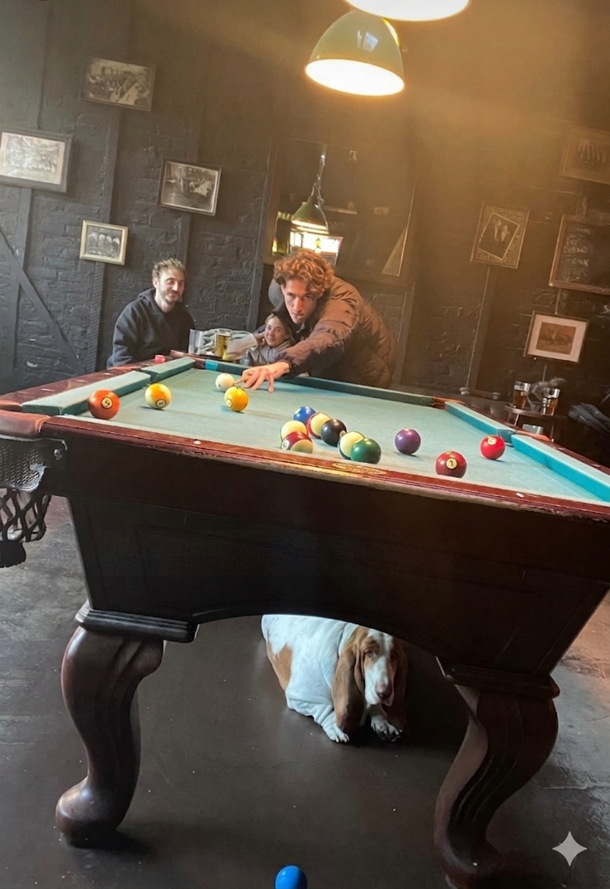
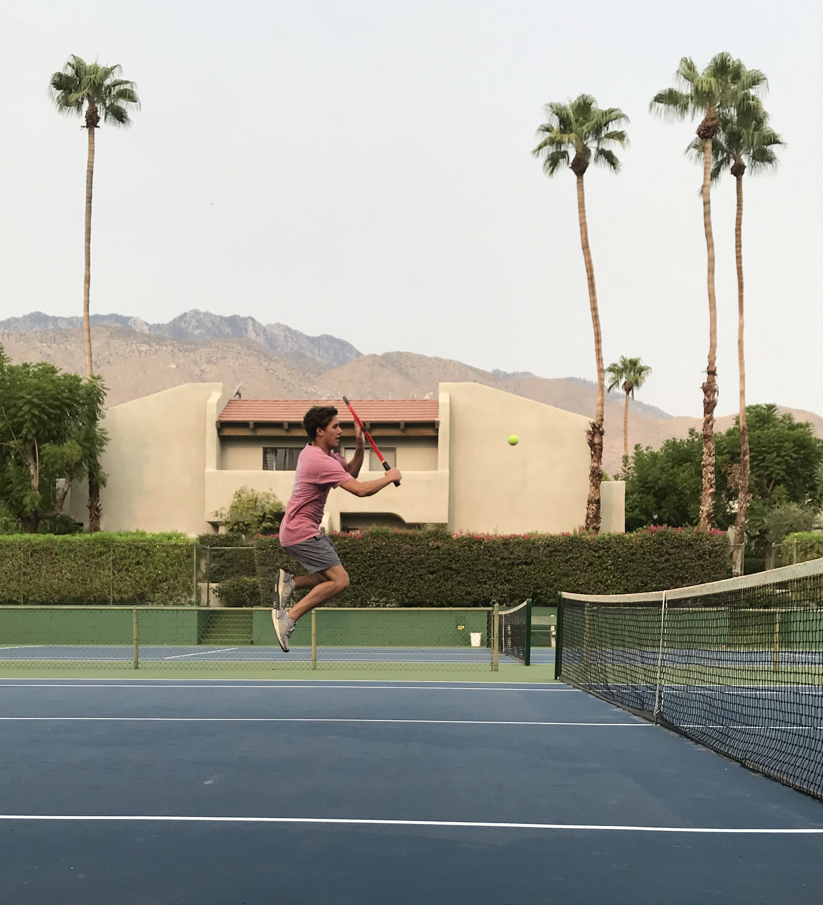

About Me

Hi there! I'm Austin. A New York City resident for the last 8 years,
I've also lived in North Carolina and Tennessee.
I finish my B.A in Computer Science at Hunter College this summer and
will be starting my career as a Software Engineer in August.
I enjoy software engineering because I like the creativity involved in designing and building systems.
It's fun picking the pieces to work with and putting them together in an efficient and reliable way.
In software engineering, there are constantly new logic challenges to be solved, and there is always
something new to be learned, whether it's a new technology, a new algorithm, or a new way of designing systems.
In addition to my academic and professional career, I have many hobbies and am always on the lookout for new ones.
I love to travel, learn foreign languages, play music, go to concerts, skateboard, play tennis, and play pool.
It's a big, diverse world with many beautiful places to see, interesting people to meet, and fun acitivities to try.
I enjoy exploring them!
Academics
Earning my B.A. in Computer Science has been fascinating, challenging, and rewarding from start to finish. Here are some of the highlights:
My favorite courses
I enjoyed learning about so many different areas of computer science, and these courses/topics were the most interesting to me:
- Software Design & Analysis III (Data Structures & Algorithms)
- Data Communications & Networks
- Operating Systems
- Software Engineering
- Computer Architecture II
- Data Base Management
- iOS Development
Current Learning Areas
This is a field where there is always something new to learn, and currently I'm learning more about:
- Cloud Computing via Google Cloud Computing Certificate
- Microservices Architecture via Engineering Software Products by Ian Sommerville
- Data Structures and Algorithms via Leetcode (621 problems solved and counting!)
- Computer Networking via Computer Networks by Tanenbaum • Feamster • Wetherall
- Transport Layer
- Application Layer
- Building a server in C++ via building it!
Hobbies
I believe having a well rounded set of hobbies is great because each one gives you skills and perspectives which you can apply to other hobbies and areas of your life. Here are some of my favorite activies:
Traveling

My friend Alex and me in Paris. So far I've been to 13 countries and 33 U.S. states!
Skateboarding
I've been skating since I was 5 years old. NYC is the best place in the world for skating in my opinion.
Playing Pool

Pool requires strategy and precision, and it feels great when you sink 5+ shots in a row!
Concerts

Concerts are full of energy, and it's like doing karaoke with your favorite bands.
Tennis

A great form of exercise and strategic playing. Tennis is one of my favorite sports to play and to watch.
Playing Music
I've been playing guitar for 11 years and am now taking singing lessons!
Learning Foreign Languages
I've become very proficient in German over the last 5 years and have now been to Germany 4 times! I've also learned a little Mandarin, Danish, Spanish, and French.